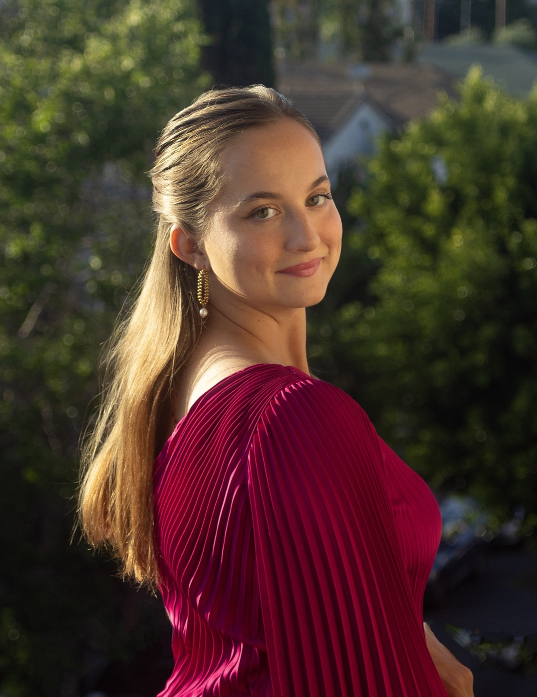

Julia Kempf is a soprano based in Los Angeles and a recent graduate of the USC Thornton School of Music, where she earned her Bachelor of Music in Vocal Arts in 2025. She studies with Derrick Lawrence and previously worked with baritone Rod Gilfry, in addition to mentorship from artists including Karen Park, Stanford Olsen, and Catherine Malfitano. Originally from Chicago, she has also studied theater in London at the Sylvia Young Theatre School and in Los Angeles at the Lee Strasberg Theatre & Film Institute. She is also a graduate of Interlochen Arts Academy, where she studied Vocal Performance.
Her recent operatic engagements include Donna Elvira in Don Giovanni at the Trentino Music Festival, the title role in Cendrillon at USC Thornton, Erste Dame in Die Zauberflöte at the Trentino Music Festival, the title role in La belle Hélène through USC Opera Scenes, and Orfeo in Orfeo ed Euridice at Interlochen. Ensemble credits include Lucia di Lammermoor with the Opera Buffs, as well as The Juniper Tree, Actéon, Orfeo ed Euridice, and Curlew River at USC Thornton.
In concert, Julia has appeared as soprano soloist in Carmelite Vespers by George Frideric Handel and performs regularly as a soloist for Sunday services at the First Church of Christ, Scientist. Her honors include First Place in the NATS Competition Los Angeles Chapter and recognition as a National Semi-Finalist in the Classical Singer Competition.